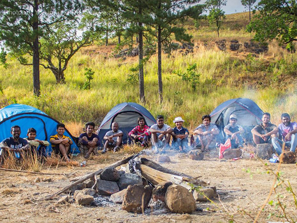
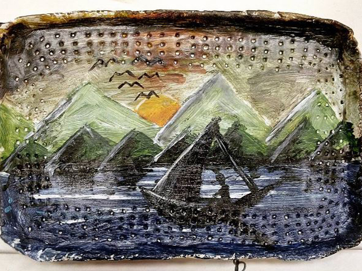

Was ich mag?
Ich lerne gerne neue Leute kennen. Ich liebe es, verschiedene Kulturen und Traditionen zu erleben.

Reisen ist eines meiner Lieblingshobbys. Ich gehe gerne wandern, klettern und Fahrrad fahren.
Jede künstlerische oder kreative Arbeit. Mir gefällt es! Von der einfachen Zeichnung bis zur grafischen Gestaltung.
